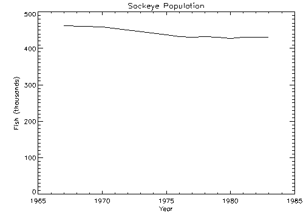
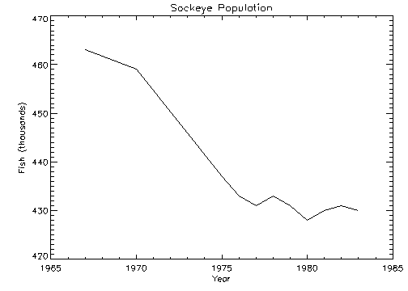
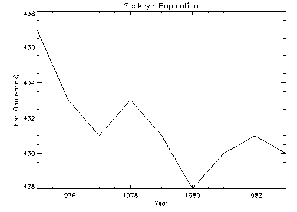
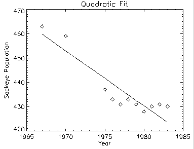
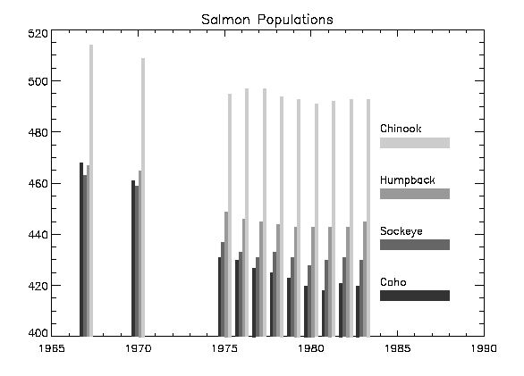
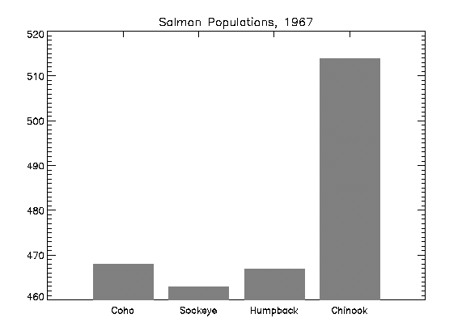
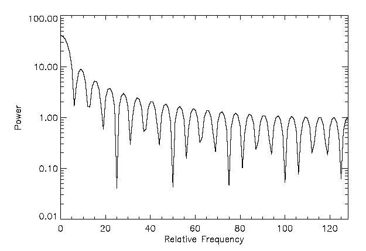
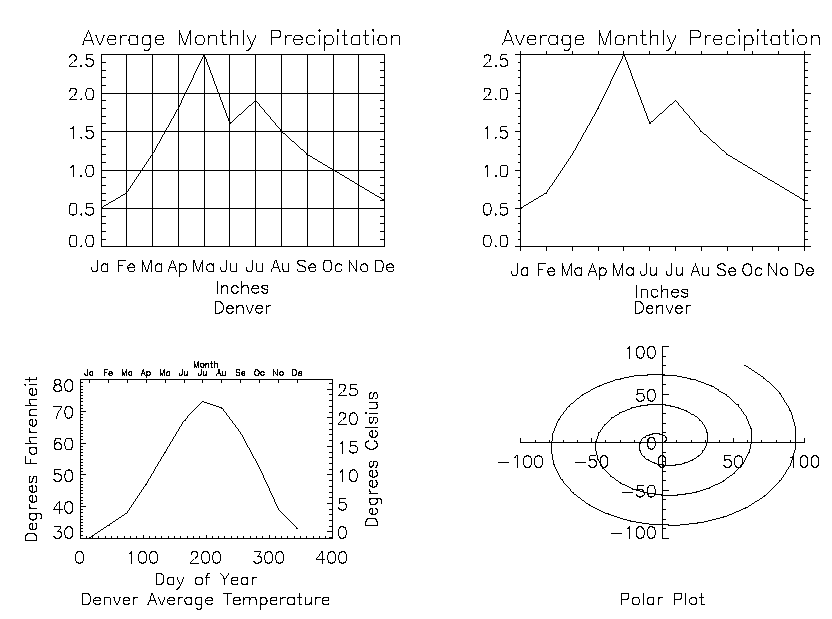
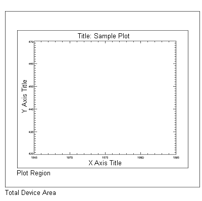

Note: Please see the PLOT function, which replicates the functionality of this routine and offers an interactive interface.
The PLOT procedure draws graphs of vector arguments. If one parameter is used, the vector parameter is plotted on the ordinate versus the point number on the abscissa. To plot one vector as a function of another, use two parameters. PLOT can also be used to create polar plots by setting the POLAR keyword.
PLOT, [ X ,] Y [, / ISOTROPIC ] [, MAX_VALUE = value ] [, MIN_VALUE = value ] [, NSUM = value ] [, / POLAR ] [, THICK = value ] [, / XLOG ] [, / YLOG ] [, / YNOZERO ]
Graphics Keywords:
[, BACKGROUND=
color_index
] [, CHARSIZE=
value
] [, CHARTHICK=
integer
] [, CLIP=
[X
0
,
Y
0
,
X
1
,
Y
1
]
] [, COLOR=
value
] [, /DATA | , /DEVICE | , /NORMAL] [, FONT=
integer
] [, LINESTYLE={0 | 1 | 2 | 3 | 4 | 5}] [, /NOCLIP] [, /NODATA] [, /NOERASE] [, POSITION=
[X
0
,
Y
0
,
X
1
,
Y
1
]
] [, PSYM=
integer
{0 to 10}] [, SUBTITLE=
string
] [, SYMSIZE=
value
] [, /T3D] [, THICK=
value
] [, TICKLEN=
value
] [, TITLE=
string
]
[, {X | Y | Z}CHARSIZE=
value
]
[, {X | Y | Z}GRIDSTYLE=
integer
{0 to 5}]
[, {X | Y | Z}MARGIN=
[left
,
right]
]
[, {X | Y | Z}MINOR=
integer
]
[, {X | Y | Z}RANGE=
[min
,
max]
]
[, {X | Y | Z}STYLE=
value
]
[, {X | Y | Z}THICK=
value
]
[, {X | Y | Z}TICK_GET=
variable
]
[, {X | Y | Z}TICKFORMAT=
string
]
[, {X | Y | Z}TICKINTERVAL=
value
]
[, {X | Y | Z}TICKLAYOUT=
scalar
]
[, {X | Y | Z}TICKLEN=
value
]
[, {X | Y | Z}TICKNAME=
string_array
]
[, {X | Y | Z}TICKS=
integer
]
[, {X | Y | Z}TICKUNITS=
string
]
[, {X | Y | Z}TICKV=
array
]
[, {X | Y | Z}TITLE=
string
]
[, ZVALUE=
value
{0 to 1}]
A vector representing the abscissa values to be plotted. If X is not specified, Y is plotted as a function of point number (starting at zero). If both arguments are provided, Y is plotted as a function of X .
This argument is converted to double precision floating-point before plotting. Plots created with PLOT are limited to the range and precision of double-precision floating-point values.
The ordinate data to be plotted. This argument is converted to double-precision floating-point before plotting.
Set this keyword to force the scaling of the X and Y axes to be equal.
Note: The X and Y axes will be scaled isotropically and then fit within the rectangle defined by the POSITION keyword; one of the axes may be shortened. See POSITION for more information.
The maximum value to be plotted. If this keyword is present, data values greater than the value of MAX_VALUE are treated as missing and are not plotted. Note that the IEEE floating-point value NaN is also treated as missing data.
The minimum value to be plotted. If this keyword is present, data values less than the value of MIN_VALUE are treated as missing and are not plotted. Note that the IEEE floating-point value NaN is also treated as missing data.
The presence of this keyword indicates the number of data points to average when plotting. If NSUM is larger than 1, every group of NSUM points is averaged to produce one plotted point. If there are m data points, then m /NSUM points are displayed. On logarithmic axes a geometric average is performed.
It is convenient to use NSUM when there is an extremely large number of data points to plot because it plots fewer points, the graph is less cluttered, and it is quicker.
Set this keyword to produce polar plots. The X and Y vector parameters, both of which must be present, are first converted from polar to Cartesian coordinates. The first parameter is the radius, and the second is the angle (expressed in radians). For example, to make a polar plot, you would use a command such as:
PLOT, /POLAR, R, THETA
Note: See Using AXIS with Polar Plots for an example that adds axes to a polar plot.
Controls the thickness of the lines connecting the points. A thickness of 1.0 is normal, 2 is double wide, etc.
Set this keyword to specify a logarithmic X axis, producing a log-linear plot. Set both XLOG and YLOG to produce a log-log plot. Note that logarithmic axes that have ranges of less than a decade are not labeled.
Set this keyword to specify a logarithmic Y axis, producing a linear-log plot. Set both XLOG and YLOG to produce a log-log plot. Note that logarithmic axes that have ranges of less than a decade are not labeled.
Set this keyword to inhibit setting the minimum Y axis value to zero when the Y data are all positive and nonzero, and no explicit minimum Y value is specified (using YRANGE, or !Y.RANGE). By default, the Y axis spans the range of 0 to the maximum value of Y , in the case of positive Y data. Set bit 4 in !Y.STYLE to make this option the default.
See Direct Graphics Keywords for the description of the following graphics and plotting keywords:
Note: Many of the graphic keyword parameters correspond directly to fields in the system variables !P, !X, !Y, or !Z. When specifying a keyword parameter name and value in a call that value affects only the current call, the corresponding system-variable field is not changed. Changing the value of a system-variable field changes the default for that particular parameter and remains in effect until explicitly changed.
This section includes the following examples:
The PLOT procedure has many keywords that allow you to create a vast variety of plots. Here are a few simple examples using the PLOT command.
; Create a simple dataset:
D = FINDGEN(100)
; Create a simple plot with the title "Simple Plot":
PLOT, D, TITLE = 'Simple Plot'
; Plot one argument versus another:
PLOT, SIN(D/3), COS(D/6)
; Create a polar plot:
PLOT, D, D, /POLAR, TITLE = 'Polar Plot'
; Use plotting symbols instead of connecting lines
by including the PSYM keyword. Label the X and Y axes
with XTITLE and YTITLE:
PLOT, SIN(D/10), PSYM=4, XTITLE='X Axis', YTITLE='Y Axis'
This section illustrates the use of the basic x versus y plotting routines, PLOT and OPLOT. PLOT produces linear-linear plots by default, and can produce linear-log, log-linear, or log-log plots with the addition of the XLOG and YLOG keywords.
Data used in these examples are from a fictitious study of Pacific Northwest Salmon fisheries. In the example, we suppose that data were collected in the years 1967, 1970, and from 1975 to 1983. The following IDL statements create and initialize the variables SOCKEYE, COHO, CHINOOK, and HUMPBACK, which contain fictitious fish population counts, in thousands, for the 11 observations:
SOCKEYE=[463, 459, 437, 433, 431, 433, 431, 428, 430, 431, 430]
COHO=[468, 461, 431, 430, 427, 425, 423, 420, 418, 421, 420]
CHINOOK=[514, 509, 495, 497, 497, 494, 493, 491, 492, 493, 493]
HUMPBACK=[467, 465, 449, 446, 445, 444, 443, 443, 443, 443, 445]
; Construct a vector in which each element contains
; the year of the sample:
YEAR = [1967, 1970, INDGEN(9) + 1975]
Example Code:
This code is also contained in the batch file
plot01
, located in the
examples/doc/plot
subdirectory of the IDL installation directory. To execute the batch file, enter the following command at the
IDL
prompt:
@plot01
The following IDL commands create a plot of the population of Sockeye salmon, by year:
PLOT, YEAR, SOCKEYE, $
TITLE='Sockeye Population', XTITLE='Year', $
YTITLE='Fish (thousands)'
The PLOT procedure, which produces an x versus y plot on a new set of axes, requires one or two parameters: a vector of y values or a vector of x values followed by a vector of y values. The first attempt at making a plot produces the figure shown below. Note that the three titles, defined by the keywords TITLE, XTITLE, and YTITLE, are optional.
|
 |
The fluctuations in the data are hard to see because the scores range from 428 to 463, and the plot’s y -axis is scaled from 0 to 500. Two factors cause this effect. By default, IDL sets the minimum y -axis value of linear plots to zero if the y data are all positive. The maximum axis value is automatically set by IDL from the maximum y data value. In addition, IDL attempts to produce from three to six tick-mark intervals that are in increments of an integer power of 10 times 2, 2.5, 5, or 10. In this example, this rounding effect causes the maximum axis value to be 500, rather than 463.
The YNOZERO keyword parameter inhibits setting the y -axis minimum to zero when given positive, nonzero data. The figure below illustrates the data plotted using this keyword. The y -axis now ranges from 420 to 470, and IDL creates tick-mark intervals of 10.
|
 |
; Define variables:
@plot01
PLOT, YEAR, SOCKEYE, /YNOZERO, $
TITLE='Sockeye Population', XTITLE='Year', $
YTITLE='Fish (thousands)'
The graph-text positioning command !C, starts a new line of text output. Titles containing more than one line of text are easily produced by separating each line with this positioning command.
In the above example, the main title could have been displayed on two centered lines by changing the keyword parameter TITLE to the following statement:
TITLE = 'Sockeye!CPopulation'
Note: When using multiple line titles you may find that the default margins are inadequate, causing the titles to run off the page. In this case, set the [XY]MARGIN keywords or increase the values of !X.MARGIN or !Y.MARGIN.
The range of the x , y , or z axes can be explicitly specified with the [XYZ] RANGE keyword parameter. The argument of the keyword parameter is a two-element vector containing the minimum and maximum axis values.
As explained above, IDL attempts to produce even tick intervals, and the axis range selected by IDL may be slightly larger than that given with the RANGE keyword. To obtain the exact specified interval, set the axis style parameter to one ( YSTYLE = 1 ).
The effect of the YNOZERO keyword is identical to that obtained by including the keyword parameter YRANGE = [MIN(Y), MAX(Y)] in the call to PLOT. You can make /YNOZERO the default in subsequent plots by setting bit 4 of !Y.STYLE to one ( !Y.STYLE = 16 ).
See STYLE for details on the STYLE field of the axis system variables !X, !Y, and !Z. Briefly: Other bits in the STYLE field extend the axes by providing a margin around the data, suppress the axis and its notation, and suppress the box-style axes by drawing only left and bottom axes.
For example, to constrain the x-axis to the years 1975 to 1983, the keyword parameter XRANGE = [1975, 1983] is included in the call to PLOT. The following figure illustrates the result.
|
 |
Note that the x -axis actually extends from 1974 to 1984, as IDL elected to make five tick-mark intervals, each spanning two years. If, as explained above, the x -axis style is set to one, the plot will exactly span the given range. The call combining all these options is as follows:
; Define variables:
@plot01
PLOT, YEAR, SOCKEYE, /YNOZERO, $
TITLE='Sockeye Population', XTITLE = 'Year', $
YTITLE = 'Fish (thousands)', XRANGE = [1975, 1983], /XSTYLE
Note: The keyword parameter syntax /XSTYLE is synonymous with the expression XSTYLE = 1 . Setting a keyword parameter to 1 is often referred to as simply setting the keyword.
Each data point can be marked with a symbol and/or connected with lines. The value of the keyword parameter PSYM selects the marker symbol, as described in PSYM . For example, a value of 1 marks each data point with the plus sign ( + ), 2 is an asterisk ( * ), etc. Setting PSYM to minus the symbol number marks the points with a symbol and connects them with lines. A value of –1 marks points with a plus sign ( + ) and connects them with lines. Note also that setting PSYM to a value of 10 produces histogram style plots in which a horizontal line is drawn across each x bin.
Frequently, when data points are plotted against the results of a fit or model, symbols are used to mark the data points while the model is plotted using a line. The figure below illustrates this, fitting the Sockeye population values to a quadratic function of the year. The IDL function POLY_FIT is used to calculate the quadratic.
|
 |
The statements used to construct the above plot are as follows:
; Define variables.
@plot01
; Use the LINFIT function to fit the data to a line:
coeff = LINFIT(YEAR, SOCKEYE)
;YFIT is the fitted line:
YFIT = coeff[0] + coeff[1]*YEAR
; Plot the original data points with PSYM = 4, for diamonds:
PLOT, YEAR, SOCKEYE, /YNOZERO, PSYM = 4, $
TITLE = 'Quadratic Fit', XTITLE = 'Year', $
YTITLE = 'Sockeye Population'
; Overplot the smooth curve using a plain line:
OPLOT, YEAR, YFIT
Example Code:
Alternatively, you can run the
plot03
batch file to create the plot by entering:
@plot03
Bar (or box) charts are used in business-style graphics and are useful in comparing a small number of measurements within a few discrete data sets. Although not designed as a tool for business graphics, IDL can produce many business-style plots with little effort.
The following example produces a box-style chart showing the four salmon populations as boxes of differing colors or shading. The commands used to draw the next figure are shown below with annotation.
|
 |
Example Code: You do not need to type these commands in yourself; they are collected in the files plot05 .pro , which contains the two procedures, and the batch file, plot06 , which creates the plot. These files are located in the examples/doc/plot subdirectory of the IDL distribution. Run the example procedure by entering plot05 at the IDL command prompt or view the file in an IDL Editor window by entering .EDIT plot05.pro .
First, we define a procedure called EX_BOX, which draws a box given the coordinates of two diagonal corners:
; Define a procedure that draws a box, using POLYFILL,
; whose corners are (X0, Y0) and (X1, Y1):
PRO EX_BOX, X0, Y0, X1, Y1, color
; Call POLYFILL:
POLYFILL, [X0, X0, X1, X1], [Y0, Y1, Y1, Y0], COL = color
END
Next, create a procedure to draw the bar graph:
PRO EX_BARGRAPH, minval
; Define variables:
@plot01
; Width of bars in data units:
del = 1./5.
; The number of colors used in the bar graph is
; defined by the number of colors available on your system:
ncol=!D.N_COLORS/5
; Create a vector of color indices to be used in this procedure:
colors = ncol*INDGEN(4)+ncol
; Loop for each sample:
FOR iscore = 0, 3 DO BEGIN
; The y value of annotation. Vertical separation is 20 data
; units:
yannot = minval + 20 *(iscore+1)
; Label for each bar:
XYOUTS, 1984, yannot, names[iscore]
; Bar for annotation:
EX_BOX, 1984, yannot - 6, 1988, yannot - 2, colors[iscore]
; The x offset of vertical bar for each sample:
xoff = iscore * del - 2 * del
; Draw vertical box for each year's sample:
FOR iyr=0, N_ELEMENTS(year)-1 DO $
EX_BOX, year[iyr] + xoff, minval, $
year[iyr] + xoff + del, $
allpts[iyr, iscore], $
colors[iscore]
ENDFOR
END
Enter the following at the IDL prompt to compile these two procedures from the IDL distribution:
.run plot05.pro
To create the bar graph on your screen, enter the following commands.
; Load a color table:
LOADCT, 39
As in the previous example, the PLOT procedure is used to draw the axes and to establish the scaling using the NODATA keyword.
PLOT, year, CHINOOK, YRANGE = [MIN(allpts),MAX(allpts)], $
TITLE = 'Salmon Populations', /NODATA, $
XRANGE = [year[0], 1990]
; Get the y value of the bottom x-axis:
minval = !Y.CRANGE[0]
; Create the bar chart:
EX_BARGRAPH, minval
The following figure shows a box chart illustrating the direct specification of the x -axis tick values, number of ticks, and tick names. Building upon the previous program, this program shows each of the four scores for the year 1967, the first year in our data. It uses the EX_BOX procedure from the previous example to draw a rectangle for each sample.
|
 |
Enter the following command at the IDL prompt to compile the EX_BOX and EX_BARGRAPH procedures (discussed in the previous example) from the IDL distribution:
.run plot05.pro
Enter the following commands to create the box chart:
; Define variables:
@plot01
; Tick x values, 0.2, 0.4, 0.6, 0.8:
XVAL = FINDGEN(4)/5. + .2
; Make a vector of scores from first year, corresponding to
; the name vector from above:
YVAL = [COHO[0], SOCKEYE[0], HUMPBACK[0], CHINOOK[0]]
; Make the axes with no data. Force x range to [0, 1],
; centering xval, which also contains the tick values.
; Force three tick intervals making four tick marks.
; Specify the tick names from the names vector:
PLOT, XVAL, YVAL, /YNOZERO, XRANGE = [0,1], XTICKV = XVAL, $
XTICKS = 3, XTICKNAME = NAMES, /NODATA, $
TITLE = 'Salmon Populations, 1967'
; Draw the boxes, centered over the tick marks.
; !Y.CRANGE[0] is the y value of the bottom x-axis.
FOR I = 0, 3 DO EX_BOX, XVAL[I] - .08, !Y.CRANGE[0], $
XVAL[I] + 0.08, YVAL[I], 128
Example Code: Alternatively, you can enter @plot07 at the IDL command prompt to run the plot07 batch file and create the plot.
Note: You can display date/time data on plots, contours, and surfaces through the tick settings of the date/time axis. Date/time data can be displayed on any axis (x, y or z). The date/time data is stored as Julian dates, but the LABEL_DATE routine and axis keywords allow you to display this data as calendar dates. See LABEL_DATE for examples.
The XLOG, YLOG, and ZLOG keywords can be used with the PLOT routine to get any combination of linear and logarithmic axes. The OPLOT procedure uses the same scaling and transformation as did the most recent plot.
|
 |
The figure illustrates using PLOT to make a linear-log plot. It was produced with the following statements:
; Create data array:
X = FLTARR(256)
; Make a step function. Array elements 80 through 120 are set to 1:
X[80:120] = 1
; Make a filter:
FREQ = FINDGEN(256)
; Make the filter symmetrical about the value x = 128:
FREQ = FREQ < (256-FREQ)
; Second order Butterworth, cutoff frequency = 20.
FIL = 1./(1+(FREQ/20)^2)
; Plot with a logarithmic x-axis. Use exact axis range:
PLOT, /YLOG, FREQ, ABS(FFT(X,1)), $
XTITLE = 'Relative Frequency', YTITLE = 'Power', $
XSTYLE = 1
; Plot graph:
OPLOT, FREQ, FIL
Example Code:
Alternatively, you can run the
plot08
batch file to create the plot:
@plot08
Plots can be grouped on the display or page in the horizontal and/or vertical directions using the system variable field !P.MULTI. IDL sets the plot window to produce the given number of plots on each page and moves the window to a new sector at the beginning of each plot. If the page is full, it is first erased. If more than two rows or columns of plots are produced, IDL decreases the character size by a factor of 2.
!P.MULTI controls the output of multiple plots. Set !P.MULTI equal to an integer vector in which:
The first element of the vector contains the number of empty sectors remaining on the page. The display is erased if this field is zero when a new plot is begun.
The second element of the vector contains the number of plots per page in the horizontal direction.
The third element contains the number of plots per page in the vertical direction.
The fourth element contains the number of plots stacked in the Z dimension.
The fifth element controls the order in which plots are drawn. Set the fifth element equal to zero to make plots from left to right (column major), and top to bottom. Set the fifth element equal to one to make plots from top to bottom, left to right (row major).
Omitting any of the five elements from the vector is the same as setting that element equal to zero.
For example, to set up IDL to stack two plots vertically on each page, use the following statement:
!P.MULTI = [0, 1, 2]
Note that the first element, !P.MULTI (0), is set to zero to cause the next plot to begin a new page. To make four plots per page with two columns and two rows, use the following statement:
!P.MULTI = [0, 2, 2]
To reset to the default of one plot per page, set the value of !P.MULTI to 0, as shown in the following statement:
!P.MULTI = 0
|
 |
This figure shows four plots in a single window.
Example Code: For details, inspect the batch file plot09 in the examples/doc/plot subdirectory of the IDL distribution or type @plot09 at the IDL command prompt to run the example.
Note the following features of the plots in the figure:
| 1. | The plot in the upper left has grid-style tick marks. This is accomplished by setting the TICKLEN keyword equal to 1.0 |
| 2. | The plot in the upper right has outward-facing tick marks. This is accomplished by setting the TICKLEN keyword to a negative value. |
| 3. | The plot in the lower left corner has different axes on left and right, top and bottom. This is accomplished by drawing the top and right axes separately, using the AXIS procedure. |
| 4. | The plot in the lower right uses no default axes at all. The centered axes are drawn with calls to the AXIS procedure. |
The plot-data window is the region of the page or screen enclosed by the axes. The plot region is the box enclosing the plot-data window and the titles and tick annotation.
|
 |
The figure illustrates the relationship of the plot-data window, plot region, and the entire device area. These areas are determined by the following system variables and keyword parameters, in order of decreasing precedence:
|
!P.POSITION |
|
!P.REGION |
|
!P.MULTI |
|
![XYZ].MARGIN |
The MAX_VALUE and MIN_VALUE keywords to PLOT can be used to create missing data plots wherein bad data values are not plotted. Data values greater than the value of the MAX_VALUE keyword or less than the value of the MIN_VALUE keyword are treated as missing and are not plotted. The following code creates a dataset with bad data values and plots it with and without these keywords:
; Make a 100-element array where each element is
; set equal to its index:
A = FINDGEN(100)
; Set 20 random point in the array equal to 400.
; This simulates "bad" data values above the range
; of the "real" data.
A(RANDOMU(SEED, 20)*100)=400
; Set 20 random point in the array equal to -10.
; This simulates "bad" data values below the range
; of the "real" data.
A(RANDOMU(SEED, 20)*100)=-10
; Plot the dataset with the bad values. Looks pretty bad!
PLOT, A
; Plot the dataset, but don't plot any value over 101.
; The resulting plot looks better, but still shows spurious values:
PLOT, A, MAX_VALUE=101
; This time leave out both high and low spurious values.
; The resulting plot more accurately reflects the "real" data:
PLOT, A, MAX_VALUE=101, MIN_VALUE=0
The following plotting routines allow you to set maximum and minimum values in this manner: CONTOUR Procedure , PLOT, SHADE_SURF Procedure , SURFACE Procedure .
In addition to the maximum and minimum values specified with the MAX_VALUE and MIN_VALUE keywords, these plotting routines treat the IEEE floating-point value NaN (Not A Number) as missing data automatically.
|
Original |
Introduced |
PLOT , OPLOT Procedure , PLOTS Procedure